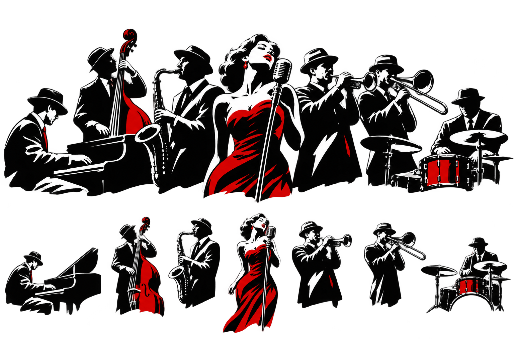

ROBERT JOHNSON
델타 블루스의 전설
♪ Cross Road BluesBLUES 101 · 6 SLIDES
슬픔만이 아니라 위로와 자유도 담습니다.
반복되는 리듬
목소리처럼 말하는 악기
한 음에도 담기는 이야기
19세기 말, 아프리카계 미국인의 노래에서 발전했습니다.
세 개의 코드만으로도 블루스를 시작할 수 있습니다.
리듬 섹션 위로 노래와 솔로가 오갑니다.

05 / 06시대마다 다른 블루스의 목소리를 만날 수 있습니다.
델타 블루스의 전설
♪ Cross Road Blues시카고 일렉트릭 블루스
♪ Hoochie Coochie Man노래하듯 울리는 기타
♪ The Thrill Is Gone소울풀한 블루스 보컬
♪ I’d Rather Go Blind← → 키로 이동 · F 키로 전체 화면 · 모바일에서는 좌우로 스와이프